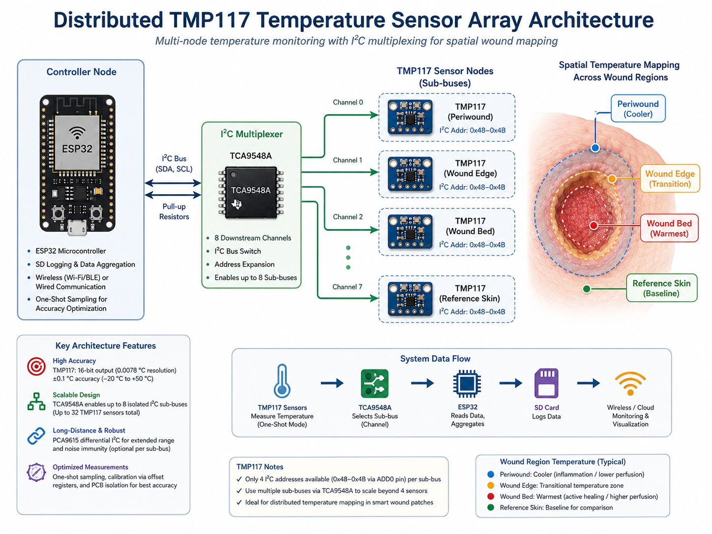
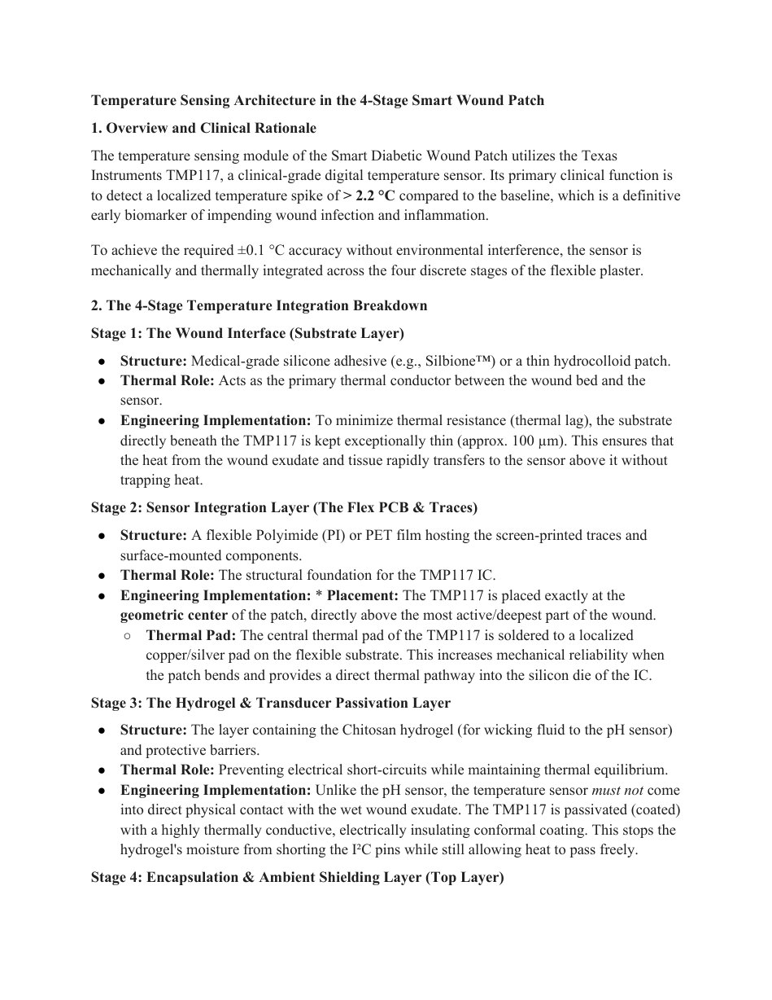
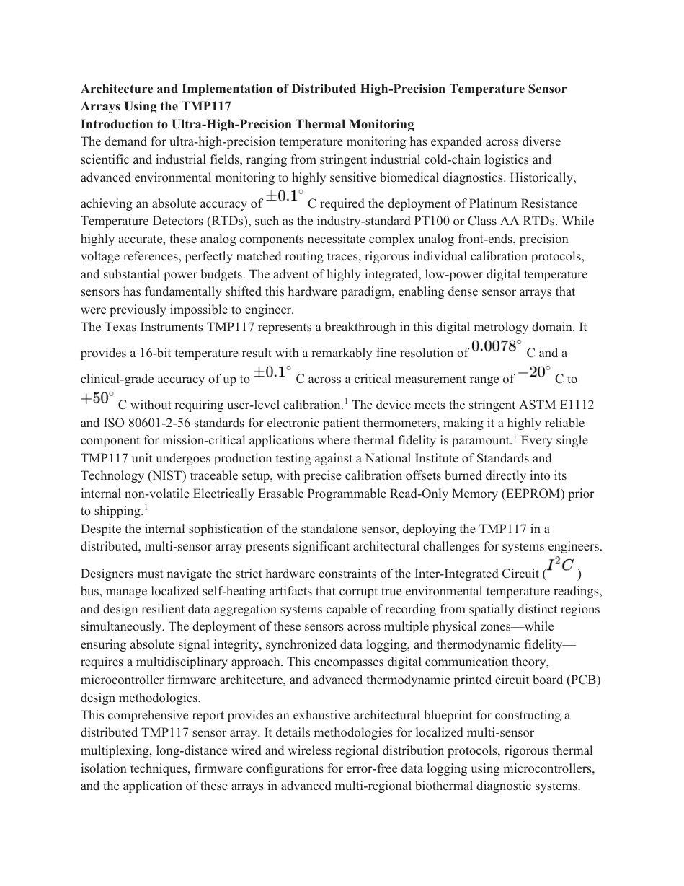
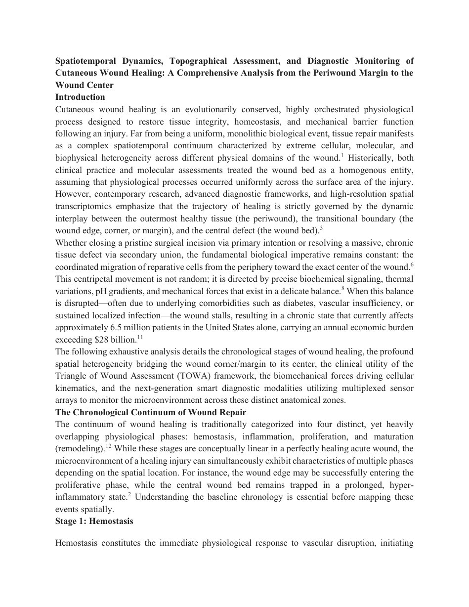

Week 4 converted the literature and sensor selection work into a practical smart wound patch architecture using a distributed TMP117 temperature sensor array, FPCB design rules, wound-stage interpretation and project funding preparation.
Distributed TMP117 Temperature Sensor Array for Smart Wound Monitoring
Distributed Sensor Concept
The TMP117 was selected as the main temperature sensor and arranged as a multi-point sensor array. This allows the patch to compare temperature across the wound center, wound edge and surrounding periwound region instead of relying on one single point.
I2C Expansion Method
Because TMP117 has limited address options, the TCA9548A I2C multiplexer was included to separate the sensor nodes into independent channels and avoid address conflicts when many sensors are used.
FPCB Patch Direction
The Week 4 design focused on a flexible sensor layer that can be placed close to the wound area, while passivation and insulation layers protect the electronics from wound moisture and external temperature disturbance.
Week 4 Design Images



Four Functional Layers of the Smart Patch
| Layer | Main Purpose | Design Meaning for IWMTAS |
|---|---|---|
| Wound Interface | Contacts the wound dressing side and transfers heat | Improves thermal coupling between tissue and sensor |
| FPCB Sensor Layer | Holds TMP117 sensors and signal traces | Allows flexible, multi-site temperature measurement |
| Hydrogel / Passivation | Protects electronics from wound exudate | Maintains safety and reduces electrical failure risk |
| Ambient Shielding | Reduces external room temperature effect | Improves accuracy of wound-side temperature readings |
Selected because it provides high temperature accuracy with a simple digital I2C interface and low power consumption for wearable patch use.
Used to connect more TMP117 sensors than the normal address limit allows, making multi-region monitoring possible.
One-shot sampling, low current operation and careful placement of pull-up resistors were considered to reduce sensor self-heating error.
Thin traces, local decoupling and stable sensor placement were considered for reliable flexible patch fabrication.
Hemostasis, inflammation, proliferation and remodeling were linked with possible temperature changes during healing.
The project fund request was prepared for prototype fabrication, materials, electronic components and FPCB-related work.
Wound Healing Stage Understanding


Week 4 is the bridge between research and implementation. It converts the selected temperature sensor into a real multi-sensor patch architecture. This allows IWMTAS to detect local wound changes and compare different wound regions, which is more useful than a single temperature reading.